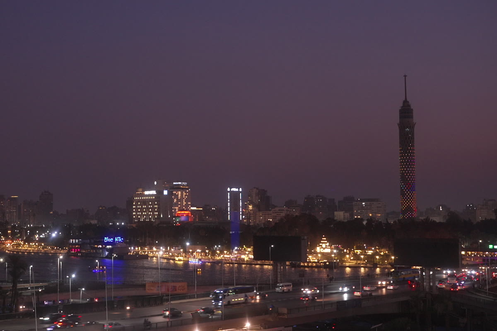
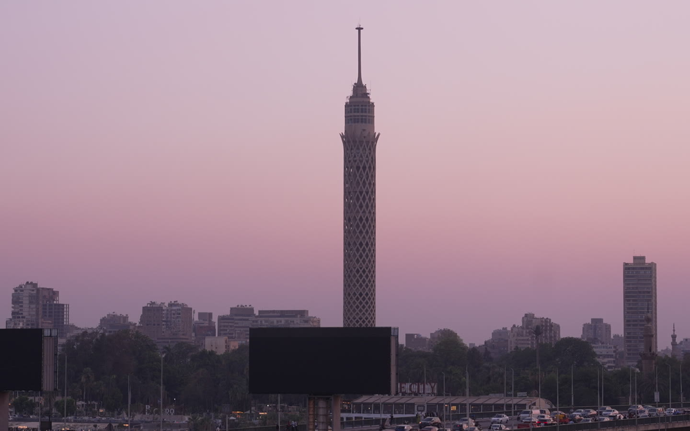

المجموعة الكاملة لخدمات الإنتاج، من أول تصريح إلى آخر إشارة بث.
بث مباشر من أي موقع في مصر والشرق الأوسط. عشر وحدات بث فضائي جاهزة، وبث عبر الإنترنت و4G LIVE وPro180 بدعم الشبكات الخلوية، وخدمة AVIWEST DMNG عبر الإنترنت بالتعاون مع NOL للوصول إلى أي قناة في العالم بجودة HD أو SD.

إنتاج فيديو بجودة HD كاملة مع 12 طاقماً محترفاً. تصوير متعدد الكاميرات، تغطية مباشرة للأخبار العاجلة والرياضة والمؤتمرات والفعاليات، قصص الشارع، أفلام وثائقية وإعلانات وأفلام كاملة. هندسة صوت ومعدات إضاءة وطواقمها وخط كامل من معدات التثبيت.
أربعة استوديوهات مباشرة، الرئيسي منها مجهز بخمس كاميرات وخلفية حقيقية للنيل وكوبري السادس من أكتوبر والمتحف المصري وميدان التحرير. مرونة كاملة في عدد الكاميرات وتكاليف التشغيل، خصوصاً في العقود طويلة الأمد.

وحدات مونتاج وخدماته، ومساحات عمل للمنتجين والصحفيين والمونتيرين على دقائق من الحدث.
تصاريح التصوير مع وصول ميسّر للآثار والمواقع التاريخية، تخليص جمركي للمعدات، نقل وشحن وإقامة، وخط كامل من خدمات ما قبل الإنتاج.
منسقون ومنتجون، ترجمة وترجمة فورية، تحليل، ووصول إلى الشخصيات العامة من سياسيين ونشطاء ومشاهير ورياضيين وخبراء إعلام. أرشيف للأحداث الحديثة يشمل ثورة 2011 وأرشيف تاريخي، واستشارات للمنتجين الأجانب وغرف الأخبار الناشئة.
مكتب الحجز الفضائي
booking@caironews.tv